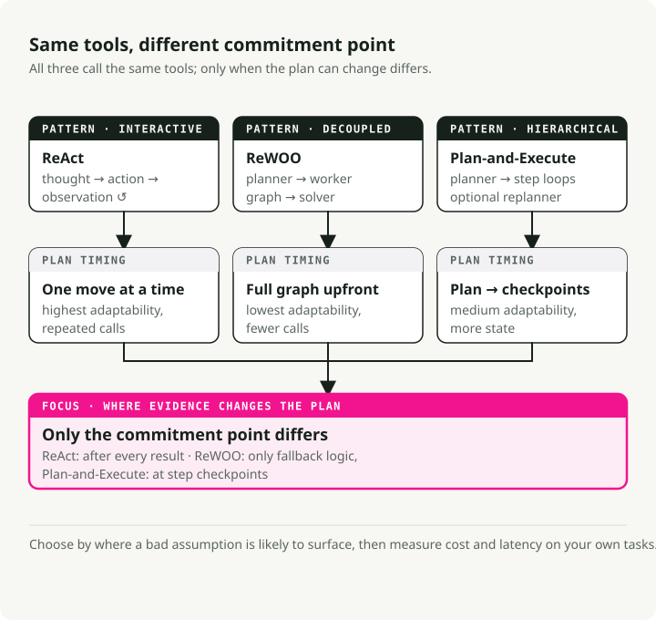
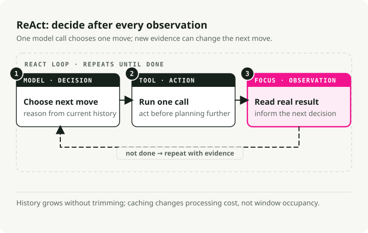
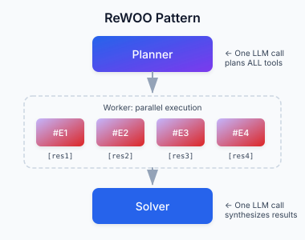
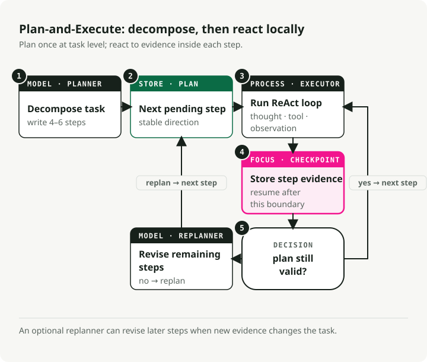
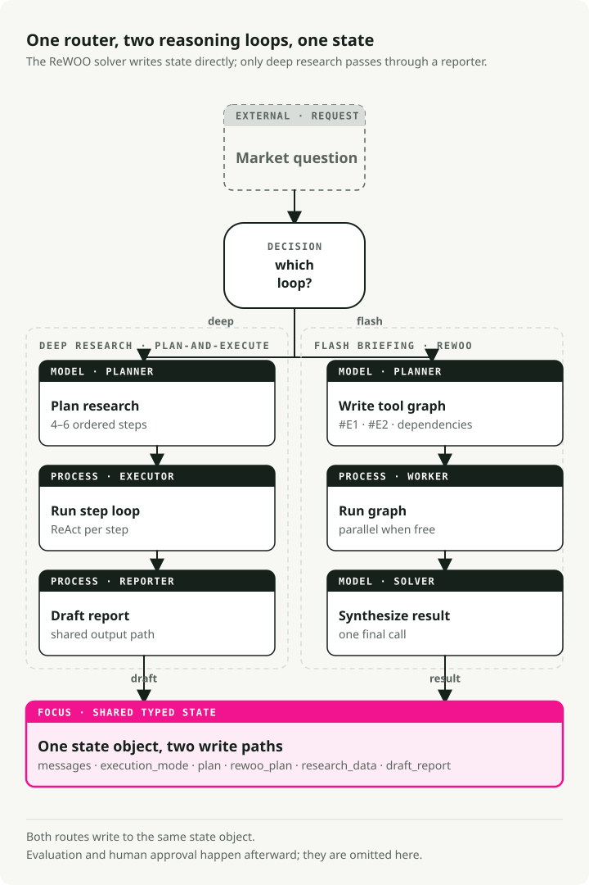

AI Agent Reasoning Loops in 2026: ReAct vs ReWOO vs Plan-and-Execute
Part 1 of the Engineering the Agentic Stack series
Building useful AI agents is mostly system design now, not prompt engineering. The biggest single decision is the agent reasoning loop: how the system plans, calls tools, observes results, and decides when to stop.
This post compares the three AI agent loop patterns worth knowing in 2026: ReAct, ReWOO, and Plan-and-Execute. The running example is a Market Analyst Agent I built in LangGraph, with the full code on GitHub.
TL;DR: ReAct is flexible but expensive, ReWOO is fast when the workflow is predictable, and Plan-and-Execute fits multi-step analysis. A production AI agent can route between reasoning loops per request, using shared state and checkpointed LangGraph nodes so each task gets the loop that matches its shape.
Why AI agent reasoning loops matter
A year ago, making an LLM useful was mostly about prompt phrasing. Now it's about graph design: how reasoning, tool use, and memory get wired together.
The reasoning loop sits in the middle of that graph. It decides when the model thinks, when it calls a tool, and when it stops. Pick the wrong one and you spend extra tokens on calls you didn't need, you add seconds of latency per turn, or your agent breaks the first time a tool returns something it didn't expect.
Three AI agent reasoning patterns

ReAct: think, act, observe, repeat
ReAct (Yao et al., 2022) is the original pattern for interactive agents. It runs a loop:
- Thought: the agent generates a "thought" to break down the goal and plan the next step.
- Action: based on the thought, it calls a tool.
- Observation: the agent reads the result, which updates its understanding for the next thought.

Pros:
- Grounding in real observations reduces made-up facts.
- The agent can change strategy on the fly based on what it just saw.
- The "scratchpad" gives you an audit trail of the reasoning.
Cons:
- History accumulates and gets re-processed at every step, so latency and cost grow with the loop length.
- Wasteful when the tool calls could have been planned upfront, which is exactly the niche ReWOO fills.
- Without a stop condition or step limit, the loop will run indefinitely.
Best for: exploratory tasks, debugging, situations where you can't predict what comes next.
ReWOO: plan everything upfront
ReWOO (Reasoning WithOut Observation) is a more efficient cousin of ReAct. The trick is decoupling reasoning from tool execution: instead of stopping to observe each action, ReWOO plans the entire sequence of tool calls in one pass.
- Plan: one LLM call writes the full plan of tool calls, using variable placeholders (
#E1,#E2) for outputs that don't exist yet. - Worker: a non-LLM executor runs the planned tools in sequence or in parallel, filling in the placeholders.
- Solver: a final LLM call takes the gathered observations and writes the answer.

Pros:
- Around 5x more token-efficient than ReAct, since you skip the repeated Thought-Action-Observation history.
- Lower latency. No re-submission of history at every step.
- The planner can be fine-tuned on its own, with no live environment.
Cons:
- Brittle when tools misbehave. The plan assumes everything works.
- Needs predictable workflows.
- Without explicit fallback logic, a flawed plan keeps running.
Best for: quick snapshots, status checks, dashboards. Anything where the tools behave predictably.
Plan-and-Execute: a hybrid
Plan-and-Execute sits between the two. The paper sketches a simple split that most modern agents have adopted:
- Planning phase: the agent first generates a plan that breaks the task into smaller sub-tasks.
- Execution phase: the agent then carries out those sub-tasks.
The original paper focused on zero-shot prompting. Modern frameworks like LangGraph have grown it into a full orchestration pattern with sequential execution and per-step model choice (a strong reasoning model for planning, a cheaper one for execution).

Pros:
- Hierarchical reasoning that mirrors how a human expert breaks down a project.
- Re-planning is possible. You can pause and reassess if a step's result was unexpected.
- Model specialization. The planner can be expensive, the executor can be cheap.
- Bounded complexity, with a clear checkpoint after every step.
Cons:
- Higher latency than ReWOO because steps run sequentially.
- More state to manage.
- Overkill for one-shot queries.
Best for: complex multi-step analysis, research tasks, anything that needs synthesis at the end.
How to choose an AI agent reasoning loop
| Feature | ReAct (2022) | Plan-and-Execute (2023) | ReWOO (2023) |
|---|---|---|---|
| Core philosophy | Improviser: act, then decide what to do next based on the result. | Architect: build a full blueprint, execute it, then review. | Optimizer: write a "script" with variables and run it all at once. |
| Workflow | Iterative loop: Thought → Action → Observation. | Two-stage: Phase 1 (Planning), Phase 2 (Execution). | Decoupled: Planner creates a graph of tool calls; Worker runs them. |
| Adaptability | Highest: can change direction after every single tool call. | Medium: typically re-plans only after a set of steps is completed. | Lowest: usually follows the initial script unless the Solver fails. |
| Efficiency | Low: high token usage; must re-read entire history for every step. | Medium: saves tokens by not "re-thinking" during execution. | High: minimal LLM calls; can parallelize tool execution for speed. |
| Best for | Open-ended exploration or tasks where results are unpredictable. | Long-horizon tasks that require a steady goal (e.g., writing a paper). | Structured, repeatable workflows (e.g., checking weather in 5 cities). |
1. ReAct: the "think-as-you-go" pattern
How it feels: like a human debugging a problem. "I'll try this... okay, that didn't work, let me try that instead."
Strength: handles unknown unknowns. If a search result reveals a new topic, the agent can pivot in the next step.
Weakness: prone to looping on a failed action. Most expensive pattern in tokens.
2. Plan-and-Execute: the mission-oriented pattern
How it feels: like a project manager. "Here is the 5-step plan. Let's do steps 1 through 5, then check whether we're done."
Strength: keeps the agent focused on the high-level goal. Better success rates on long, complex tasks.
Weakness: if step 1 fails in a way that breaks steps 2-5, the agent may grind through the broken plan before noticing.
3. ReWOO: the compiler pattern
How it feels: like writing a small program. "I need data from Tool A and Tool B, then I'll combine them in Tool C."
Strength: much faster and cheaper. The plan is compiled once with placeholders (#E1 for the first tool's output), then executed without further LLM calls until the final synthesis.
Weakness: blind during execution. If the first tool says "I can't find that person," the agent will still run the next steps that depended on that person existing.
Which to choose
- ReAct if the agent is chatting with a user and needs to react in the moment.
- Plan-and-Execute if you're automating a long, multi-step job, like a research report.
- ReWOO if you have a predictable pipeline and want to cut your API bill by something like 80%.
A worked example: the Market Analyst Agent
To make this concrete I built a Market Analyst Agent that uses all three patterns in one codebase, on a market research task.
It uses LangGraph for orchestration. All three patterns share the same state object, so the router can pick which one to run per request:

State definition
The shared state captures everything the agent needs across modes:
class PlanStep(BaseModel):
"""A single step in the research plan."""
step_number: int
description: str
tool_hint: str | None = None
completed: bool = False
result: str | None = None
class UserProfile(BaseModel):
"""Structured user context loaded from long-term memory."""
risk_tolerance: str | None = None
investment_horizon: str | None = None
class AgentState(BaseModel):
"""Main state for the Market Analyst Agent graph."""
# Identity and profile context for memory-backed personalization
user_id: str
user_profile: UserProfile = Field(default_factory=UserProfile)
# Message history with LangGraph's add_messages reducer
messages: Annotated[list, add_messages] = Field(default_factory=list)
# Execution mode (set by router)
execution_mode: ExecutionMode | None = None
# Plan-and-Execute state
plan: list[PlanStep] = Field(default_factory=list)
current_step_index: int = 0
# ReWOO state
rewoo_plan: list[ReWOOPlanStep] = Field(default_factory=list)
# Research results
research_data: ResearchData | None = None
# HITL output
draft_report: DraftReport | None = None
report_approved: bool = False
Pattern 1: Plan-and-Execute implementation
Plan-and-Execute is the right fit for tasks that need multi-step synthesis. The trick is keeping planning and execution separate: a strong model for the upfront plan, then a ReAct loop to execute each step with room to react to tool results.
How it lines up with the pattern:
- One upfront planning phase. A single LLM call produces the whole plan as a list of step descriptions.
- Structured output via Schema-Guided Reasoning, which guarantees valid JSON.
- No tool execution yet. The planner only decides what to do, not how.
- Human-readable steps. Each step is text that an executor will interpret.
# System prompt guides the LLM to think like a research analyst
# creating a strategic plan, not immediate tool calls
PLANNER_SYSTEM_PROMPT = """You are a senior investment research analyst.
Break down stock analysis requests into 4-6 research steps covering:
1. Current price and basic metrics
2. Recent news and announcements
3. Competitor analysis (if relevant)
4. Financial health assessment
5. Risk factors
6. Investment thesis synthesis
Output as JSON with step_number, description, and tool_hint."""
# Schema-Guided Reasoning: Enforce structure with Pydantic
class PlanOutput(BaseModel):
"""Structured output for the planner."""
steps: list[PlanStep] = Field(description="Research steps to execute")
ticker: str = Field(description="The stock ticker being analyzed")
def planner_node(state: AgentState) -> dict:
"""Generate a research plan from the user's request.
This is Phase 1 of Plan-and-Execute: creating the high-level strategy.
"""
# Use a powerful model for strategic planning
llm = ChatAnthropic(model="claude-sonnet-4-5-20250929", temperature=0)
# Apply Schema-Guided Reasoning to guarantee valid plan structure
# This prevents common formatting errors that would break execution
structured_llm = llm.with_structured_output(PlanOutput)
# Context from long-term memory personalizes the plan
profile_context = f"""
User Profile:
- Risk Tolerance: {state.user_profile.risk_tolerance}
- Investment Horizon: {state.user_profile.investment_horizon}
"""
# Single LLM call creates the complete plan
result: PlanOutput = structured_llm.invoke([
SystemMessage(content=PLANNER_SYSTEM_PROMPT + profile_context),
HumanMessage(content=f"Create a research plan for: {last_user_message}"),
])
# State update: Store the plan and initialize tracking
return {
"plan": result.steps, # The sequential steps to execute
"current_step_index": 0, # Start at step 0
"research_data": ResearchData(ticker=result.ticker), # Initialize data container
}
That llm.with_structured_output(PlanOutput) line is Schema-Guided Reasoning (SGR), which I covered in a previous post. Forcing the PlanOutput schema means the planner always returns a valid list of steps. LangGraph then uses those structured outputs to drive deterministic control flow through conditional edges.
Pattern 2: ReAct execution
Once the plan exists, the executor runs each step as its own ReAct loop. This is Phase 2: each step is small enough that a Thought-Action-Observation cycle stays focused, and the agent can react to whatever the tool returns.
How the ReAct part lines up:
- Iterative execution. One step at a time, with observation feedback.
- The Thought-Action-Observation loop runs inside
create_react_agent. - Previous step results get fed in as context for the current reasoning.
- The agent picks tools based on the step description.
- It can change approach mid-step based on what a tool returns.
# Tools available for the ReAct agent to choose from
TOOLS = [
get_stock_snapshot,
get_price_history,
search_news,
search_competitors,
get_financials,
]
def executor_node(state: AgentState) -> dict:
"""Execute the current step using a ReAct agent.
This is Phase 2 of Plan-and-Execute: adaptive execution of each planned step.
Each step runs as a mini ReAct loop until completion.
"""
# Get the current step from the plan
current_step = state.plan[state.current_step_index]
# Build context from what we've learned so far
# This matters: each step builds on previous observations
previous_context = ""
for step in state.plan[:state.current_step_index]:
if step.result:
previous_context += f"\nStep {step.step_number}: {step.result}\n"
# Create a ReAct agent for this step
# LangGraph's create_react_agent implements the full Thought-Action-Observation loop:
# 1. Agent generates a "thought" about what tool to call
# 2. Agent calls the tool ("action")
# 3. Tool returns result ("observation")
# 4. Agent decides: call another tool or finish
react_agent = create_react_agent(
model=ChatAnthropic(model="claude-sonnet-4-5-20250929"),
tools=TOOLS,
)
# Invoke the ReAct loop for this single step
# The agent will loop internally until it completes the step
result = react_agent.invoke({
"messages": [
SystemMessage(content=EXECUTOR_SYSTEM_PROMPT),
HumanMessage(content=f"""Execute Step {current_step.step_number}:
{current_step.description}
Ticker: {state.research_data.ticker}
Previous findings: {previous_context}"""),
]
})
# Extract the final answer from the ReAct agent's message history
# The last message contains the synthesis after all tool calls
updated_plan = list(state.plan)
updated_plan[state.current_step_index] = PlanStep(
step_number=current_step.step_number,
description=current_step.description,
completed=True,
result=result["messages"][-1].content, # Final observation
)
# State update: Mark step complete and advance to next
return {
"plan": updated_plan,
"current_step_index": state.current_step_index + 1,
}
That's the core Plan-and-Execute flow: a powerful model writes the plan, then ReAct executes each step with full adaptability.
Pattern 3: ReWOO for fast snapshots
For quick briefings, ReWOO skips the interleaved reasoning and runs the tools in parallel. The planner emits a compiled script of tool calls upfront, and the worker runs it without any further LLM involvement.
The shape of it:
- Three phases (Planner → Worker → Solver), no loops.
- Tool calls reference
#E1,#E2placeholders for results that don't exist yet. - No LLM during execution. The worker just runs tools.
- Independent tools run in parallel.
- One synthesis call at the end, over all the data at once.
Phase 1: ReWOO planner (creates the complete execution graph upfront)
class ReWOOPlanStep(BaseModel):
"""A step in the ReWOO plan with variable placeholders.
Key difference from Plan-and-Execute's PlanStep:
- Contains actual tool_name and tool_args (not just description)
- Uses variable references (#E1) for dependencies
"""
step_id: str # e.g., "#E1" - becomes a variable
description: str
tool_name: str # Exact tool to call
tool_args: dict # May contain variable refs like {"price": "#E1"}
depends_on: list[str] = [] # For dependency ordering
result: str | None = None
class ReWOOPlanOutput(BaseModel):
"""Structured output for ReWOO planner."""
steps: list[ReWOOPlanStep] = Field(description="Planned tool calls with variables")
def rewoo_planner_node(state: AgentState) -> dict:
"""Generate a complete plan of tool calls upfront.
This is the key difference from Plan-and-Execute: instead of creating
human-readable step descriptions, we create EXACT tool calls that
the worker will execute blindly.
"""
llm = ChatAnthropic(model="claude-sonnet-4-5-20250929", temperature=0)
# Schema-Guided Reasoning ensures valid tool call specifications
structured_llm = llm.with_structured_output(ReWOOPlanOutput)
ticker = state.research_data.ticker if state.research_data else "UNKNOWN"
# Single LLM call to plan ALL tool executions
result: ReWOOPlanOutput = structured_llm.invoke([
SystemMessage(content=REWOO_PLANNER_PROMPT),
HumanMessage(content=f"""Create a ReWOO plan for: {query}
Ticker: {ticker}
Output tool calls with:
- step_id: Variable name (#E1, #E2, etc.)
- description: What this accomplishes
- tool_name: Exact tool from the list
- tool_args: Dictionary of arguments
- depends_on: List of step_ids this depends on"""),
])
# State update: Store the complete execution plan
# Worker will execute this without any LLM involvement
return {"rewoo_plan": result.steps}
Phase 2: ReWOO worker (executes tools without LLM reasoning)
def rewoo_worker_node(state: AgentState) -> dict:
"""Execute all planned tools in parallel (no LLM calls).
This is the key efficiency: Worker is "dumb" - it just runs tools
according to the plan. No LLM calls = massive token savings.
"""
results = {} # Store results keyed by step_id (e.g., "#E1": "$150.23")
# Execute ALL independent steps in parallel using ThreadPoolExecutor
# This is where ReWOO gets its speed advantage
with ThreadPoolExecutor(max_workers=5) as executor:
futures = {
executor.submit(execute_tool, step): step
for step in state.rewoo_plan
if not step.depends_on # Only independent tools for parallel batch
}
# Collect results as they complete
for future in as_completed(futures):
step = futures[future]
results[step.step_id] = future.result()
# No LLM reasoning here - just store the raw tool output
# State update: Store results for the Solver phase
return {"rewoo_plan": updated_steps}
Phase 3: ReWOO solver (synthesizes all results in one LLM call)
def rewoo_solver_node(state: AgentState) -> dict:
"""Synthesize all tool results into a flash briefing.
This is the second efficiency gain: Instead of interleaving
LLM calls with tool execution (like ReAct), we make ONE
final synthesis call with all gathered data.
"""
# Build context from ALL tool results at once
tool_results = []
for step in state.rewoo_plan:
if step.result:
tool_results.append(f"### {step.description}\n{step.result}")
context = "\n\n".join(tool_results)
# Single LLM call to synthesize everything
structured_llm = llm.with_structured_output(FlashBriefingOutput)
result = structured_llm.invoke([
SystemMessage(content=REWOO_SOLVER_PROMPT),
HumanMessage(content=f"Create a flash briefing from this data:\n\n{context}"),
])
return {"draft_report": result}
The key difference: ReWOO plans every tool call upfront with placeholders (#E1, #E2), executes them in parallel without LLM calls in the middle, and synthesizes the results in one call at the end. That makes it cheap for predictable workflows.
Understanding the code: how each pattern differs
The three patterns differ in when and how they call the LLM:
| Pattern | LLM calls during execution | State updates | Key code pattern |
|---|---|---|---|
| Plan-and-Execute | 1 for planning + 1 per step | Sequential step completion | planner_node() → loop: executor_node() → reporter_node() |
| ReAct (within each step) | Multiple per step (thought-action cycles) | Accumulated message history | create_react_agent() loops internally until step complete |
| ReWOO | 1 for planning + 0 during execution + 1 for synthesis | Parallel tool completion | rewoo_planner_node() → rewoo_worker_node() → rewoo_solver_node() |
What changes between them is what the planner produces. That decides everything downstream.
-
Plan-and-Execute creates human-readable step descriptions:
# Planner output (list of PlanStep objects) plan = [ PlanStep( step_number=1, description="Get current price and key financial metrics", tool_hint="get_stock_price" ), PlanStep( step_number=2, description="Search for recent news and earnings", tool_hint="search_news" ), # ... more steps ]The executor reads each description and decides which tools to call. Flexible, but it costs an LLM call per step.
-
ReAct doesn't have an upfront plan. It uses iterative reasoning:
# No planning phase - ReAct works step-by-step with accumulated messages messages = [ HumanMessage(content="Execute Step 1: Get current price"), AIMessage(content="I'll call get_stock_price"), ToolMessage(tool_call_id="1", content="$132.45"), AIMessage(content="Now I need metrics..."), # ... agent continues until step complete ]Multiple LLM calls per step, adapting based on observations. Most flexible, most expensive.
-
ReWOO creates explicit, executable tool call specifications:
# Planner output (list of ReWOOPlanStep objects) rewoo_plan = [ ReWOOPlanStep( step_id="#E1", tool_name="get_stock_price", tool_args={"ticker": "NVDA"} ), ReWOOPlanStep( step_id="#E2", tool_name="search_news", tool_args={"query": "NVDA earnings", "limit": 5} ), # ... all tool calls planned upfront ]The worker runs blind, with no LLM involvement. All the reasoning lives in the planner and solver. Cheapest of the three.
Memory and state flow:
- Plan-and-Execute: state moves through
plan→current_step_index→research_data. - ReAct: state accumulates in the
messagesarray (the full conversation history). - ReWOO: state moves through
rewoo_plan, withresultfields filled in by the worker.
Putting it all together: wiring the graph
Here's how the three patterns coexist in a single LangGraph system. They share one AgentState and live in one graph. A router picks the path per request, so this is one agent with three execution modes, not three agents in a trench coat.
LangGraph keeps the wiring declarative:
def create_graph(checkpointer=None):
builder = StateGraph(AgentState)
# Add nodes
builder.add_node("router", router_node)
builder.add_node("planner", planner_node)
builder.add_node("executor", executor_node)
builder.add_node("reporter", reporter_node)
builder.add_node("rewoo_planner", rewoo_planner_node)
builder.add_node("rewoo_worker", rewoo_worker_node)
builder.add_node("rewoo_solver", rewoo_solver_node)
# Define edges
builder.add_edge(START, "router")
builder.add_conditional_edges("router", route_after_router, {
"planner": "planner",
"rewoo_planner": "rewoo_planner",
})
# Deep Research path
builder.add_edge("planner", "executor")
builder.add_conditional_edges("executor", route_after_executor, {
"executor": "executor", # Loop back for more steps
"reporter": "reporter", # Done with plan
})
builder.add_edge("reporter", END)
# Flash Briefing path (ReWOO)
builder.add_edge("rewoo_planner", "rewoo_worker")
builder.add_edge("rewoo_worker", "rewoo_solver")
builder.add_edge("rewoo_solver", END)
return builder.compile(
checkpointer=checkpointer,
interrupt_before=["reporter"], # HITL pause for approval
)
Automatic pattern selection with a router
To pick the right loop for each request, I added a router classifier. It uses Schema-Guided Reasoning to keep the classification reliable:
class ExecutionMode(str, Enum):
"""Execution mode for the agent."""
DEEP_RESEARCH = "deep_research" # Plan-and-Execute + ReAct (thorough)
FLASH_BRIEFING = "flash_briefing" # ReWOO (fast, token-efficient)
class RouterOutput(BaseModel):
"""Structured output for the router."""
mode: ExecutionMode # DEEP_RESEARCH or FLASH_BRIEFING
ticker: str
reasoning: str
ROUTER_SYSTEM_PROMPT = """Classify the user's request:
1. **deep_research**: Complex analysis requiring synthesis
- Examples: "Analyze strategic risks", "investment thesis"
2. **flash_briefing**: Quick snapshots, simple data retrieval
- Examples: "quick snapshot", "current price"
Default to deep_research if unclear."""
structured_llm = llm.with_structured_output(RouterOutput)
With this in place, users don't pick a mode. The router routes "current price" to ReWOO and "investment thesis" to Plan-and-Execute on its own.
Key takeaways
- ReAct is the default for flexibility, at the cost of tokens and latency.
- ReWOO wins on speed and cost when the tools are reliable and the results predictable.
- Plan-and-Execute is the right call for complex analysis that needs synthesis at the end.
- A router can pick between them per request, so users don't have to.
- State management matters. LangGraph's checkpointing is what makes interrupts and recovery possible.
The full implementation, including the router and the shared state, is in the Market Analyst Agent repository.
What's next
Part 2, AI Agent Memory Architecture in 2026, is on short-term context with PostgreSQL checkpointing and long-term knowledge in Qdrant vector storage. That's what makes pause/resume workflows and cross-session learning possible.
Key Takeaways
- Reasoning loops are control-flow patterns, not magic intelligence upgrades.
- ReAct is the default for tool-rich exploratory tasks because it interleaves thinking and acting.
- Plan-and-execute works when the task can be decomposed before execution.
- ReWOO reduces repeated model calls by planning tool use up front, but it is less flexible when observations change the plan.
- Choose the loop by failure mode: tool drift, planning depth, latency, or need for human review.
References
- ReAct: Synergizing Reasoning and Acting in Language Models (Yao et al., 2022)
- ReWOO: Decoupling Reasoning from Observations for Efficient Augmented Language Models (Xu et al., 2023)
- Plan-and-Solve Prompting: Improving Zero-Shot Chain-of-Thought Reasoning by Large Language Models (Wang et al., 2023)
- Market Analyst Agent Repository
The Market Analyst Agent code is on GitHub if you want to read along.
Series: Engineering the Agentic Stack
- Part 1: AI Agent Reasoning Loops in 2026 (this post)
- Part 2: AI Agent Memory Architecture in 2026 — checkpoints, vector stores, and document memory
- Part 3: AI Agent Tool Use in 2026 — MCP, CLI, Skills, code execution, and ACI
- Part 4: AI Agent Security in 2026 — guardrails, permissions, sandboxes, HITL, and MCP scoping
- Part 5: Long-Running AI Agent Runtime in 2026 — sessions, sandboxes, checkpoints, harnesses, and deployment shapes